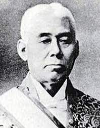
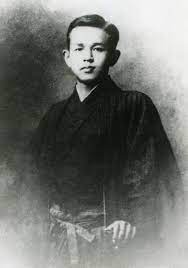

大谷翔平は岩手県水沢市（現：奥州市）出身のプロ野球選手で、ロサンゼルス・ドジャースに所属している。彼は投手としても打者としても活躍する「二刀流」の選手であり、その球速165 km/hは日本人最速記録である。2012年に北海道日本ハムファイターズからドラフト1位で指名され、以後「二刀流」の選手として活躍してきた。 2014年には11勝、10本塁打で日本プロ野球史上初の「2桁勝利・2桁本塁打」を達成し、2016年にはベストナインのダブル受賞とリーグMVPに輝いた。2017年にはMLBのロサンゼルス・エンゼルスに移籍し、2018年には日本人史上4人目の新人王を獲得。 2021年には日本人史上2人目のシーズンMVPとシルバースラッガー賞を受賞し、「世界で最も影響力のある100人」にも選ばれた。2022年にはMLBでベーブ・ルース以来となる、二桁勝利・二桁本塁打を達成し、10月には近代MLBで初めて投手打者の両方で規定回に達した選手となった。 2023年のWBCではエース兼打者として大きく貢献し、WBC史上初の2部門でのオールWBCチームに選ばれ、WBCのMVPも獲得。シーズンでは最多本塁打を獲得し、2回目のシルバースラッガー賞とシーズンMVPを受賞。また、ハンク・アーロン賞も受賞し、数々の実績を挙げている。
著名人
大谷翔平
銀次

岩手県普代村出身の元プロ野球選手・銀次（本名：赤見内銀次）は、東北楽天ゴールデンイーグルスのアンバサダーとして野球振興に携わっている。彼は普代村で野球を始め、盛岡中央高校では左翼手から捕手に転向し、高校通算24本塁打を記録。2005年に楽天からドラフト指名を受け、プロ入り。 楽天時代は二軍での活躍があり、2009年には内野手に転向。2011年にはイースタンリーグ首位打者に輝くなど成績を上げ、2012年には一軍でのレギュラーとして活躍。2013年にはリーグ優勝・日本一に貢献し、日本シリーズで優秀選手賞を獲得。 その後もプレーを続け、2017年には初のゴールデン・グラブ賞を獲得。2019年には楽天生え抜き初の通算1000安打を達成。2023年には一軍昇格し、代打で勝利に貢献。しかし、同年11月に現役引退し、楽天のアンバサダーに就任した。
原隆

原敬は日本の外交官や政治家で、外交次官、逓信大臣、内閣総理大臣、司法大臣などを歴任しました。彼は岩手県盛岡市生まれで、家族は江戸期に南部氏に仕えた家系でした。彼は郷里の藩校で学び、後に上京して様々な私塾で学びましたが、経済的な理由から一時期は郷里に戻りました。 教育を受けた後、外交官としての道を選び、外交次官や大阪毎日新聞社社長などを経て政界に進出しました。彼は平民出身でありながら、1918年には総理大臣に就任し、「平民宰相」として知られました。しかし、1921年に東京駅で暗殺されました。
石川啄木

石川啄木は、1886年に岩手県で生まれ、1912年に26歳で亡くなった歌人、詩人です。 盛岡中学校を中退後、浪漫主義の詩人として活動を始め、19歳で最初の詩集『あこがれ』を刊行しました。しかし、経済的事情から代用教員や新聞記者として働く傍ら、小説家を志しましたが失敗しました。 1910年に刊行した初の歌集『一握の砂』は、三行分かち書き形式で生活に即した新しい歌風を取り入れ、歌人としての名声を得ました。また、同年に起きた幸徳事件を契機として、社会主義への関心を深め、文学評論も執筆しました。 しかし、結核を患っており、1912年に亡くなりました。 啄木の歌は、日常生活や孤独感、貧困などを題材とした、自然主義的な作風が特徴です。また、社会主義への関心も反映されており、当時の社会への批判的な視点も見られます。 啄木は、わずか26年の生涯で、近代短歌に大きな影響を与えた詩人です。